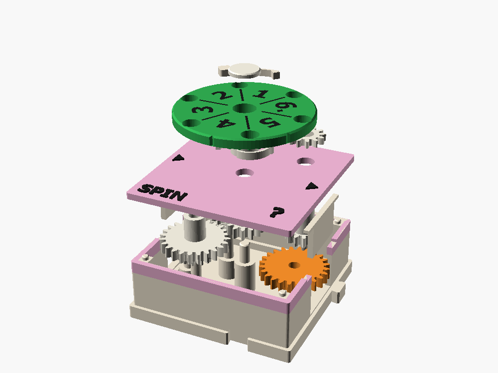
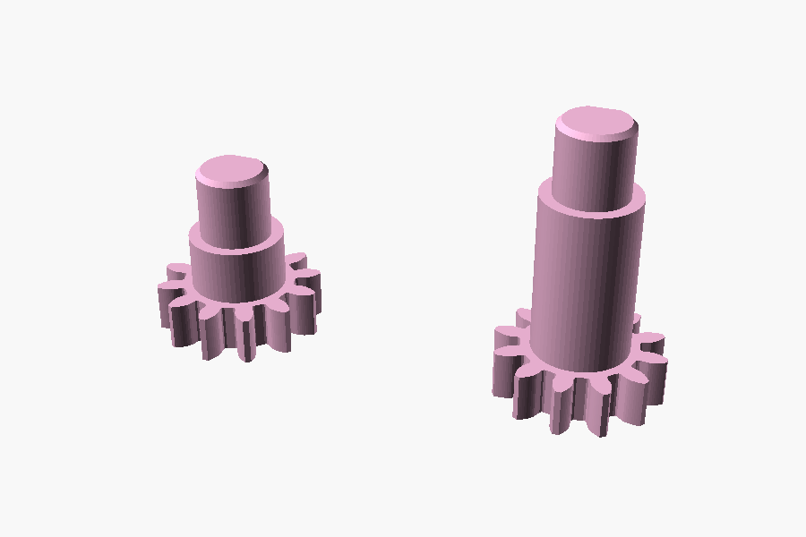

SPIN ?
A wheel of fortune on a gear box lid. You crank it up, let go, and it runs on by itself until a click parks it on one of six numbers. Gears can't be truly random, but this box makes your hand's tiny wobble big enough that nobody can aim it.
1 cell · W in (16 teeth) · optional E out (24) · cost 4 to the wheel, 5 to E

The box doesn't make randomness. It amplifies it.
There are four kinds of "unpredictable". Gears can do three of them. SPIN is the third row: a deterministic machine whose answer is such a steep function of something you can't control (how fast your hand turned) that a few percent of difference is a whole number on the dial. Wrapping that round a circle, mod 6, spreads it evenly over the six results. A hardware random number generator is the same recipe: a noise source, an amplifier, and a step that keeps only the low digits.
| Kind | What it is | In software | In gears |
|---|---|---|---|
| True random | No measurable cause: radioactive decay, thermal noise | /dev/random with a hardware source | Not possible |
| Pseudo-random | A fixed rule with a long period. Same seed, same sequence | rand(), LCG, Mersenne Twister | SHUFFLE: co-prime gears added together (later) |
| Sensitive dependence | Smooth but very steep: coin toss, dice, roulette | A hash: tiny change in, big change out | SPIN, with your hand as the noise |
| Chaos | Small differences grow exponentially with time | The logistic map | Double pendulum, ball among pins: awkward in a flat box |
Crank speed in, number out
This simulates SPIN with the model's numbers. Each roll uses your chosen hand speed plus a realistic wobble. At a slow crank the wheel barely coasts and you can steer the result; crank fast and the tally flattens out. The strip under the wheel shows which number each exact crank speed would give: watch the bands get thinner as speed rises.
Gear train, freewheel, detent

Look-alike parts
B, S and O have 12-tooth bottom gears, too small for a label, so they print pink (the Chance color). S and O are near twins: one 12-tooth gear and a D-key shaft each. S is the short one, 14.6 mm: its gear rides on layer 3, under the spinner's driver. O is 23.4 mm: layer 1, the optional output pinion's shaft. Check the length before you fit either one.

Why a few percent is a whole sector
Stored energy goes as speed squared, and drag is roughly constant, so the coast distance goes as speed squared too. Twice the speed, four times the coast. A relative wobble of δ in hand speed becomes 2δ in coast.
- Spinner inertia about 6 × 10⁻⁶ kg m² with six 6 mm steel balls (3.5 without)
- At 2 crank turns a second: 10.7 wheel turns a second, about 13 mJ stored
- Drag 0.5 to 1.5 mNm: a coast of 1.5 to 4 turns, 9 to 24 sectors
- At 18 sectors of coast, 3 % of hand speed moves the answer one number
- Detent about 0.2 N, roughly 6 mNm felt at the input port
Three ways the randomness goes downstream
1. Read it
The number under the arrow is the roll, like a die. This is the main use. Roll 60 times and tally it to find out whether the box is fair; move a steel ball to fix a bias.
2. E output
Press the pinion on O and E turns by what you cranked plus the unpredictable coast. It runs at x6 while you crank, so only a meter or counter after it, or a ÷2 box first. Without the pinion the wheel coasts further.
3. FORK
The same wheel and detent turning a planet turret instead of showing a number: the line leaves on E or on N, whichever came up. The Blue Ball Machine's random junction, and the system's first "if". See the FORK page.
What else could be random, and why not first
| Idea | Verdict |
|---|---|
| Double pendulum | Truly chaotic, but needs a vertical plane and 100 mm of height, and its answer is hard to turn back into a shaft angle. |
| Galton board | Teaches the bell curve beautifully. A future standing display box, since it shows a distribution, not one choice. |
| Ball tumbling in a pinned dish | Chaotic and fun, but the result is a ball in a pocket that drives nothing, and loose balls go missing. |
| Slip clutch with uneven friction | Drifts with wear and humidity instead of spreading evenly, and wastes torque. |
| Wound spring released by a trip | The same energy every time gives the same answer every time. A random box needs a noisy source, and a perfect launcher removes it. |
| SHUFFLE: three cams added with a string | A gear pseudo-random generator that repeats after 30,381 numbers and can be cranked back to replay them. Now its own box: see the SHUFFLE page. |
Fit-checked, not yet printed
On main and fit-checked. The model renders and the spot fit checks are clean (moving parts at three input angles, the detent nub 0.08 mm short of its notch, the pawls clear when seated). Still to prove on a print: the 0.9 mm flexure pawls (PETG may be better), the 12-tooth pinion on its 6 mm key, the detent force, coast length with and without the balls, and a 60-roll tally for bias.